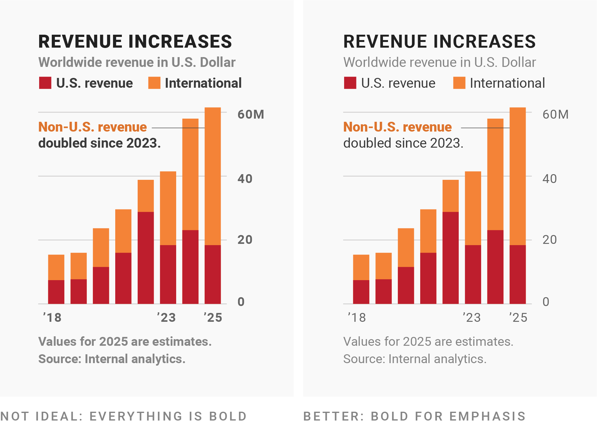
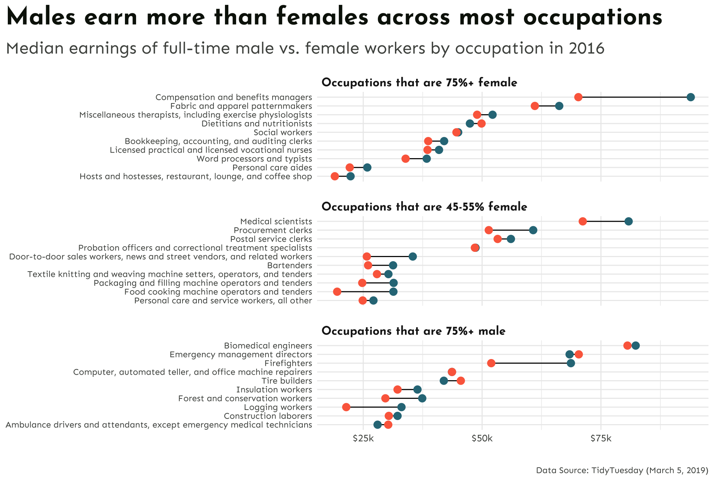

Typefaces and fonts communicate beyond more than just the written text – they can evoke emotions and can be used to better connect your audience with your work.
Serif fonts = classy / traditional / professional / serious tone; typically only used for visualization headlines
If your organization uses a serif font, consider using it in your visualization’s headline
Use a typeface with lining figures for numerals
Different typefaces display numbers differently. Serif fonts tend to have “oldstyle figures”, which extend above and below the “line” – these can be difficult to read in a visualization.
Instead, look for options with lining figures, where numbers “line up”, i.e. they’re all the same height.
Use a monospaced typeface for numerals
Typefaces with tabular figures print every character with equal width – you may see these referred to as monospaced typefaces. These work well in tables, visualizations, or any scenario where figures should line up vertically (see how you can quickly identify how many figures a number has in the table on the right, below).
Use a typeface with all the symbols you need
Confirm that all symbols (aka glyphs) that you need exist and that they look good for your chosen typeface.
Consider special characters for different languages, currency symbols, math symbols, reference marks, sub / superscript numbers, etc.
Use bold fonts for emphasis only
Most typefaces come with fonts for different weights (Google Fonts uses numbers for font weights – extra light (200), light (300), regular (400, default), medium (500), semi bold (600), bold (700), extra bold (800)).
Use bold text for titles or to emphasize a few words in annotations. Regular or medium weights are often easiest for longer text (descriptions, annotations, notes).

Avoid really thin fonts
Thin (light-weight fonts) fonts are hard to read. Only use them in a high-contrast color and in large sizes (often, titles are the only place you’ll want to use think fonts.)
Ensure your font size is large enough
Make sure your font size is large enough, especially when presenting visualizations in a slide-based presentation (this oftentimes means increasing it larger than you would have it in print). In ggplot, adjust font sizes using theme().
No one wants to read a wall of text. You can use font size, style, color, spacing, and typeface (or combinations of these) to create a hierarchy that guide your readers.
Let’s learn how to use different fonts in our ggplots!
The problem with system fonts
A system font is one that’s already assumed to be on the vast majority of users’ devices, with no need for a web font to be downloaded.
There are only three system fonts that are guaranteed to work everywhere: sans (the default), serif, or mono. Use the family argument to specify which font family you’d like to use for a particular text element, and use the face argument to specify font face (bold, italic, plain (default)):
library(palmerpenguins)library(tidyverse)ggplot(penguins, aes(x = bill_length_mm, y = bill_depth_mm)) +geom_point() +labs(title ="This title is serif font",subtitle ="This subtitle is mono font",x ="This axis label is sans font (default)",y ="This axis is also sans font (default)") +theme(plot.title =element_text(family ="serif", size =30),plot.subtitle =element_text(family ="mono", size =25),axis.title =element_text(family ="sans", size =22),axis.text.x =element_text(family ="serif", face ="bold", size =18),axis.text.y =element_text(family ="mono", face ="italic", size =18) )
The problem with system fonts
A graphics device (GD) is something used to make a plot appear – everytime you create a plot in R, it needs to be sent to a specific GD to be rendered. There are two main device types:
screen devices: the most common place for your plot to be “sent” – whenever our plot appears in a window on our computer screen, it’s being sent to a screen device; different operating systems (e.g. Mac, Windows, Linux) have different screen devices
file devices: if we want to write (i.e. save) our plot to a file, we can send our plot to a particular file device (e.g. pdf, png, jpeg)
Unfortunately, text drawing is handled differently by each graphics device, which means that if we want a font to work everywhere, we need to configure all these different devices in different ways.
R packages to the rescue!
Fortunately, there are a couple super handy packages that make working with fonts relatively painless:
We’ll be using {showtext} for a couple reasons: it supports more file formats and more graphics devices, and it also avoids using external software ({extrafont} requires that you install some additional software and packages first). {showtext} makes is super easy to import and use Google Fonts.
Recall our dumbbell plot from week 4
Let’s improve this plot by updating the colors, modifying the theme, and using some new fonts!
Wrangle data
This code should look familiar (copied from Lecture 4.1):
##~~~~~~~~~~~~~~~~~~~~~~~~~~~~~~~~~~~~~~~~~~~~~~~~~~~~~~~~~~~~~~~~~~~~~~~~~~~~~~## setup ----##~~~~~~~~~~~~~~~~~~~~~~~~~~~~~~~~~~~~~~~~~~~~~~~~~~~~~~~~~~~~~~~~~~~~~~~~~~~~~~#..........................load packages.........................library(tidyverse)#..........................import data...........................jobs <-read_csv("https://raw.githubusercontent.com/rfordatascience/tidytuesday/master/data/2019/2019-03-05/jobs_gender.csv")##~~~~~~~~~~~~~~~~~~~~~~~~~~~~~~~~~~~~~~~~~~~~~~~~~~~~~~~~~~~~~~~~~~~~~~~~~~~~~~## wrangle data ----##~~~~~~~~~~~~~~~~~~~~~~~~~~~~~~~~~~~~~~~~~~~~~~~~~~~~~~~~~~~~~~~~~~~~~~~~~~~~~~jobs_clean <- jobs |># add cols (needed for dumbbell plot) ----mutate(percent_male =100- percent_female, # % of females within each industry was already includeddifference_earnings = total_earnings_male - total_earnings_female) |># diff in earnings between M & F# rearrange columns ----relocate(year, major_category, minor_category, occupation, total_workers, workers_male, workers_female, percent_male, percent_female, total_earnings, total_earnings_male, total_earnings_female, difference_earnings, wage_percent_of_male) |># drop rows with missing earning data ----drop_na(total_earnings_male, total_earnings_female) |># make occupation a factor ----mutate(occupation =as.factor(occupation)) |># ---- this next step is for creating our dumbbell plots ----# classify jobs by percentage male or female ----mutate(group_label =case_when( percent_female >=75~"Occupations that are 75%+ female", percent_female >=45& percent_female <=55~"Occupations that are 45-55% female", percent_male >=75~"Occupations that are 75%+ male" ))##~~~~~~~~~~~~~~~~~~~~~~~~~~~~~~~~~~~~~~~~~~~~~~~~~~~~~~~~~~~~~~~~~~~~~~~~~~~~~~## create subset df ----##~~~~~~~~~~~~~~~~~~~~~~~~~~~~~~~~~~~~~~~~~~~~~~~~~~~~~~~~~~~~~~~~~~~~~~~~~~~~~~#....guarantee the same random samples each time we run code.....set.seed(0)#.........get 10 random jobs that are 75%+ female (2016).........f75 <- jobs_clean |>filter(year ==2016, group_label =="Occupations that are 75%+ female") |>slice_sample(n =10)#..........get 10 random jobs that are 75%+ male (2016)..........m75 <- jobs_clean |>filter(year ==2016, group_label =="Occupations that are 75%+ male") |>slice_sample(n =10)#........get 10 random jobs that are 45-55%+ female (2016).......f50 <- jobs_clean |>filter(year ==2016, group_label =="Occupations that are 45-55% female") |>slice_sample(n =10)#.......combine dfs & relevel factors (for plotting order).......subset_jobs <-rbind(f75, m75, f50) |>mutate(group_label =fct_relevel(group_label, "Occupations that are 75%+ female","Occupations that are 45-55% female", "Occupations that are 75%+ male"))
Code for our original plot
This code was copied from Lecture 4.1. Resulting plot is rendered on the next slide!
In last week’s lecture on colors, we learned to be predictable in our color choices, but to avoid stereotypes (Muth 2018). It can be helpful for readers to choose a cool color for men (e.g. blues / purples) and warmer color for women (e.g. yellows, oranges, warm greens).
We’ll do that here, but this time, let’s create a named vector of colors to call from. In addition to our point colors, we’ll also include colors for our plot’s text:
The primary purpose of the {monochromeR} package is for creating monochrome colour palettes, however, it also includes a helpful function for viewing our palette:
plot +labs(title ="Males earn more than females across most occupations",subtitle ="Median earnings of full-time male vs. female workers by occupation in 2016",caption ="Data Source: TidyTuesday (March 5, 2019)") +theme_minimal() +theme(plot.title.position ="plot",plot.title =element_text(face ="bold",size =25,color = earnings_pal["dark_text"]),plot.subtitle =element_text(size =17,color = earnings_pal["light_text"],margin =margin(t =0.5, r =0, b =1, l =0, unit ="lines")),plot.caption =element_text(face ="italic",color = earnings_pal["light_text"],margin =margin(t =3, r =0, b =0, l =0, unit ="lines")),strip.text.x =element_text(face ="bold",size =12,hjust =0),panel.spacing.y =unit(x =1, "lines"),axis.text =element_text(color = earnings_pal["light_text"]),axis.text.x =element_text(size =10),axis.title =element_blank() )
Pick a typeface(s) from Google Fonts
Browse typefaces and fonts at https://fonts.google.com/. It can be helpful to type your desired text into the Preview field (you may need to expand the sidebar by clicking the Filters button on the top left of the page) to get a better sense of how your font choice will look. You can also search typefaces by name:
Import {showtext} at the top of your script, then use font_add_google() to specify the font family(ies) you want to import. Importantly, you’ll also need to “turn on” showtext using showtext_auto() – this enables showtext font rendering for any newly opened graphics devices.
##~~~~~~~~~~~~~~~~~~~~~~~~~~~~~~~~~~~~~~~~~~~~~~~~~~~~~~~~~~~~~~~~~~~~~~~~~~~~~~## setup ----##~~~~~~~~~~~~~~~~~~~~~~~~~~~~~~~~~~~~~~~~~~~~~~~~~~~~~~~~~~~~~~~~~~~~~~~~~~~~~~#..........................load packages.........................library(tidyverse)library(showtext)#..........................import fonts..........................# `name` is the name of the font as it appears in Google Fonts# `family` is the user-specified id that you'll use to apply a font in your ggpplotfont_add_google(name ="Josefin Sans", family ="josefin")font_add_google(name ="Sen", family ="sen")#................enable {showtext} for rendering.................showtext_auto()# ~ additional setup code omitted for brevity ~
Apply Google Fonts (code)
Resulting plot is rendered on the next slide!
plot +labs(title ="Males earn more than females across most occupations",subtitle ="Median earnings of full-time male vs. female workers by occupation in 2016",caption ="Data Source: TidyTuesday (March 5, 2019)") +theme_minimal() +theme(plot.title.position ="plot",plot.title =element_text(family ="josefin",face ="bold",size =25,color = earnings_pal["dark_text"]),plot.subtitle =element_text(family ="sen",size =17,color = earnings_pal["light_text"],margin =margin(t =0.5, r =0, b =1, l =0, unit ="lines")),plot.caption =element_text(family ="sen",face ="italic", # NOTE: this no longer applies since the typeface "Sen" does not exist in an italic font stylecolor = earnings_pal["light_text"],margin =margin(t =3, r =0, b =0, l =0, unit ="lines")),strip.text.x =element_text(family ="josefin",face ="bold",size =12,hjust =0),panel.spacing.y =unit(x =1, "lines"),axis.text =element_text(family ="sen",color = earnings_pal["light_text"]),axis.text.x =element_text(size =10),axis.title =element_blank() )

Import Font Awesome fonts
Font Awesome is a library of icons, which can be imported and used similar to Google Fonts. You’ll need to download the font files first (see week 5 pre-class prep instructions). We can then use showtext::font_add() to make them available for use in our ggplots:
##~~~~~~~~~~~~~~~~~~~~~~~~~~~~~~~~~~~~~~~~~~~~~~~~~~~~~~~~~~~~~~~~~~~~~~~~~~~~~~## setup ----##~~~~~~~~~~~~~~~~~~~~~~~~~~~~~~~~~~~~~~~~~~~~~~~~~~~~~~~~~~~~~~~~~~~~~~~~~~~~~~#..........................load packages.........................library(tidyverse)library(showtext)#......................import Google Fonts.......................# `name` is the name of the font as it appears in Google Fonts# `family` is the user-specified id that you'll use to apply a font in your ggpplotfont_add_google(name ="Josefin Sans", family ="josefin")font_add_google(name ="Sen", family ="sen")#....................import Font Awesome fonts...................font_add(family ="fa-brands",regular = here::here("fonts", "Font Awesome 6 Brands-Regular-400.otf"))font_add(family ="fa-regular",regular = here::here("fonts", "Font Awesome 6 Free-Regular-400.otf")) font_add(family ="fa-solid",regular = here::here("fonts", "Font Awesome 6 Free-Solid-900.otf"))#................enable {showtext} for rendering.................showtext_auto()# ~ additional setup code omitted for brevity ~
Reference icons by their Unicode
Let’s say I want to include my GitHub username along with the GitHub icon in the caption of my plot. Start by searching the Free icons on Font Awesome and click on the one you want to use (here, the github icon). Find the icon’s Unicode in the top right corner of the popup box:
Add an icon to our caption
To use this unicode in HTML, we need to stick a &#x ahead of it. We can make our lives a bit easier by saving our unicode (as well as our username text) to variable names. We’ll then use the glue::glue() function to construct our full caption. Importantly, glue() will evaluate expressions enclosed by braces as R code.
Note that we (1) wrap our object names in {} to use the values that are saved to them, and (2), we use the HTML <span> tag to apply styles to text – here, we use the font-family property and supply it the value, fa-brands (which is the id (i.e. family) we created when loading the Font Awesome 6 Brands-Regular-400.otf file at the top of our script).
Let’s also add an icon to our subtitle
We can do this the same way that we constructed our caption – note that this money icon is from the fa-regular family (though you could choose to use the solid version as well):
#........................create subtitle.........................money_icon <-""subtitle <- glue::glue("Median earnings <span style='font-family:fa-regular;'>{money_icon};</span> of full-time male versus female workers by occupation in 2016")
Apply our new subtitle & caption
Resulting plot is rendered on the next slide!
plot +labs(title ="Males earn more than females across most occupations",subtitle = subtitle,caption = caption) +theme_minimal() +theme(plot.title.position ="plot",plot.title =element_text(family ="josefin",face ="bold",size =25),plot.subtitle =element_text(family ="sen",size =17,color = earnings_pal["light_text"],margin =margin(t =0.5, r =0, b =1, l =0, unit ="lines")),plot.caption =element_text(family ="sen",face ="italic", # NOTE: this no longer applies since the typeface "sen" does not exist in an italic font stylecolor = earnings_pal["light_text"],margin =margin(t =3, r =0, b =0, l =0, unit ="lines")),strip.text.x =element_text(family ="josefin",face ="bold",size =12,hjust =0),panel.spacing.y =unit(1, "lines"),axis.text =element_text(family ="sen",color = earnings_pal["light_text"]),axis.text.x =element_text(size =10),axis.title =element_blank() )
ggplot doesn’t (natively) know how to parse HTML
. . . but the {ggtext} package does! If we want to render ggplot text using HTML or Markdown syntax, we also need to use one of {ggtext}’s theme() elements, which will parse and render the applied styles.
There are a few options, all which replace {ggplot2}’s element_text() – be sure to check out the documentation as you’re deciding which to use:
element_markdown()
element_textbox()
element_textbox_simple()
Update theme() elements to render styling
plot +labs(title ="Males earn more than females across most occupations",subtitle = subtitle,caption = caption) +theme_minimal() +theme(plot.title.position ="plot",plot.title =element_text(family ="josefin",face ="bold",size =25),plot.subtitle = ggtext::element_textbox_simple(family ="sen",size =17,color = earnings_pal["light_text"],margin =margin(t =0.5, r =0, b =1, l =0, unit ="lines")),plot.caption = ggtext::element_textbox_simple(family ="sen",face ="italic", # NOTE: this no longer applies since the typeface "sen" does not exist in an italic font stylecolor = earnings_pal["light_text"],margin =margin(t =3, r =0, b =0, l =0, unit ="lines")),strip.text.x =element_text(family ="josefin",face ="bold",size =12,hjust =0),panel.spacing.y =unit(1, "lines"),axis.text =element_text(family ="sen",color = earnings_pal["light_text"]),axis.text.x =element_text(size =10),axis.title =element_blank() )
We also need to tell reader what our colors mean!
Traditional legends are fine, but for this plot, we’ll opt to color-code our subtitle text (i.e. male & female) to match the points in our plot. We can again use the {ggtext} package to apply simple Markdown and HTML rendering to our ggplot text.
We already have the correct theme() elements added to our plot, but we do need to update our subtitle text with Markdown and HTML styling. Let’s bold, color, and make these words slightly larger than the surrounding text:
#........................create subtitle.........................money_icon <-""subtitle <- glue::glue("Median earnings <span style='font-family:fa-regular;'>{money_icon};</span> of full-time <span style='color:#2D7787;font-size:20pt;'>**male**</span> versus <span style='color:#FC6B4B;font-size:20pt;'>**female**</span> workers by occupation in 2016")